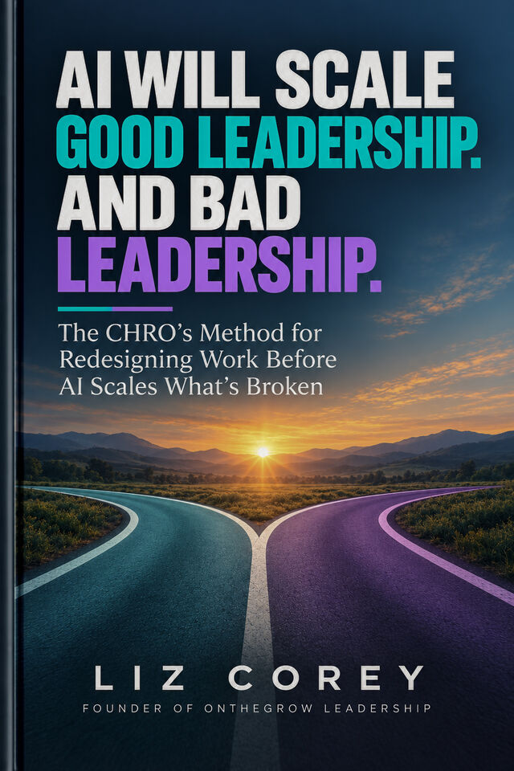
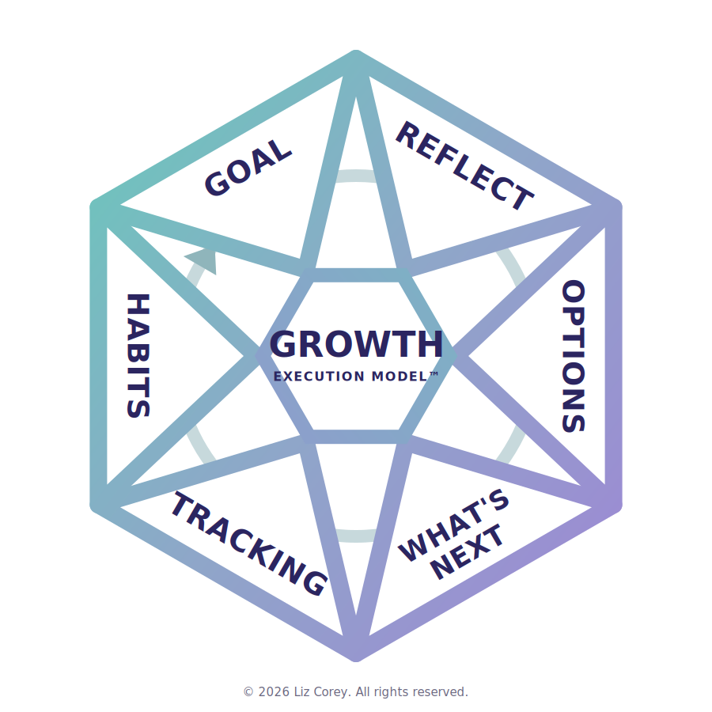
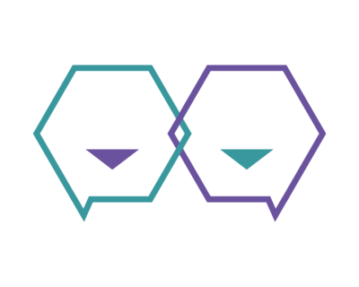

The strong and the broken alike: faster, at scale, and on the record. Your leaders are already working with AI in the room. Can your leadership system govern what it scales?
Ten questions. Two minutes. No email required to see your score.

AI is the
amplifier.
Leadership is the
infrastructure.
GROWTH™ is the
execution architecture.
The first two predate AI. The last two landed on top of them. Sources: Gallup, State of the American Manager and a study of nearly 15,000 employees; Gartner, a 1Q26 survey of 12,004 employees and a survey of 302 cybersecurity leaders.
Two organizations can deploy the same AI and get very different results.
AI amplifies what is already there. Clear standards become easier to execute. Good judgment travels farther. Strong leaders gain leverage.
But ambiguity scales too. So do inconsistent decisions, broken processes, poor leadership, outdated knowledge, and weak accountability.
The technology is not the operating system. Leadership is.
As AI moves from assisting people to performing work alongside them, leadership can no longer depend on which leader an employee happens to get. The organization needs a common infrastructure for how work is understood, decisions are made, accountability is assigned, progress is tracked, and people and agents operate together.
AI can amplify speed, knowledge, analysis, consistency, and human capacity.
It can also amplify ambiguity, bad information, inconsistent leadership, weak judgment, and broken work.
AI does not decide what deserves to scale. Leaders do.
Clear outcomes. Trusted knowledge. Defined decision rights. Human accountability. Consistent execution. Explicit boundaries for humans and agents.
GROWTH™ provides the common execution architecture: Goal. Reflect. Options. What's Next. Tracking. Habits.
One language for how people and agents move work from intention to execution.
The CHRO's Method for Redesigning Work Before AI Scales What's Broken
AI will amplify whatever leadership system already exists. This book is the method for redesigning the work first, so what scales is worth scaling.
Publishing fall 2026
Take the Amplifier TestTen questions. Two minutes. No email required to see your score.
Six steps that structure every consequential conversation in a business, from a CEO's planning session to a frontline leader's Thursday 1:1. Each step ends at a human gate: the question asked out loud before AI-assisted work ships.

Define success before execution begins. AI surfaces criteria and precedent; the human sets intent.
The human gateDid a human define success before AI touched the work?
Surface what is actually true, not what is assumed. AI supplies data; the human interrogates it.
The human gateHas this output been interrogated, or accepted?
Explore real alternatives before committing. AI generates paths; the decision stays human-made.
The human gateWere real alternatives weighed before committing?
Every action gets a named owner, a date, and a consequence. AI drafts the plan; a human owns it.
The human gateWho signed this, and will they answer for it?
How will progress be visible, and where will it be hardest? Name the hardest moment and plan for it before it arrives. AI watches and flags; the human responds and holds accountable.
The human gateIs progress actually visible, or are we assuming it?
Repetition and rhythm make the standard permanent, and the person grows from keeping it. This step is OnTheGrow.ai™.
The human gateIs the standard installed in the rhythm, or living in memory?

OnTheGrow.ai™In development. The book's method, built to run inside the work. Every leader will get a partner that preps each 1:1 against the GROWTH™ standard, remembers every commitment, and surfaces the patterns nobody else will name. The method is proven inside PE-backed companies. The platform is being built now. Join early access to help shape it.
The prep card will arrive the night before: the agenda, the open commitments, the pattern worth knowing. You will walk in ready instead of winging it.
Every commitment will carry forward. Your people will feel remembered; nothing will slip into the dark between meetings.
Evidence will be separated from assumption. Every action will be owned by a name and a date. The hard moment will be rehearsed before it arrives.
It will never own your goal, make your decision, or ship unsigned work. Anything that deserves a person will be routed to one, warmly, with nothing retained. Restraint is the design.
Analysts agree: companies will tune their AI systems with rubrics and constitutions that govern how decisions get made. Almost no one can say what that constitution contains. Ours is written, versioned, installable, and enforced in software, not in a policy PDF.
We build the leader, not the verdict. The system develops the decider and never makes the decision, which is exactly why the leaders who use it get stronger, and the enterprises that install it can trust it.
The book's five stages, in order. Every tool below is a Toolbox document from the book, and your readiness result points to the stage where you start.
See the work before you touch the technology.
What happens
See the work at the task level. Get the vocabulary straight. Test whether your knowledge is ready for AI to inherit it. Put every agent under a job description with a named owner.
In the book · Chapters 1 to 4
With OnTheGrow
The free Amplifier Test scores this foundation. Engagements start here: the knowledge audit and the first agent job descriptions.
Decide what humans and AI should each do.
What happens
Decide where each task belongs: human, assist, automate, or agent. Cover every consequential rule with named owners. Close the gap between knowing and doing.
In the book · Chapters 5 to 8
With OnTheGrow
We run the redesign with your leaders in the room, on processes you own, until the matrix is decided and signed.
Scale the system without scaling what is broken.
What happens
Prove your leaders are ready before anything scales. Install one operating rhythm for mixed human and agent teams, with GROWTH™ running every consequential conversation.
In the book · Chapters 9 to 11
With OnTheGrow
The GROWTH™ Execution Model, installed in your leaders and encoded into your agents.
Turn new ways of working into the way work gets done.
What happens
Keep listening after deployment. Make the new way of working the default, with no surprises for the people living it.
In the book · Chapters 12 and 13
With OnTheGrow
Listening systems and protocols that hold after the engagement ends.
Put the operating model to work.
What happens
Put the whole method on a roadmap with an owner, an operating model, and a governing council.
In the book · Chapter 14
With OnTheGrow
The roadmap, the operating model, and the council that owns what AI does next.
Ten questions. Two minutes. Your score, your biggest gap, and where to start.
The full method, with the 14 Toolbox tools. Publishing fall 2026.
The book's five stages, led inside your organization: Decode, Redesign, Amplify, Embed, Execute. From the work taxonomy to the scale decision, your team does the work alongside ours.
Every leader runs the same six steps, with people and with agents: Goal, Reflect, Options, What's Next, Tracking, Habits.
The method, built to run inside the work. Join early access to help shape it.
The book gives you the method. We apply it with you. The platform will run it every day.
"Everyone deserves to be led well. The organizations that treat that sentence as infrastructure, rather than aspiration, are the ones whose strategies will survive contact with the AI era."
Liz Corey, Founder & CEO, OnTheGrow Leadership™. Fifteen years at PwC, then CHRO and Chief People Officer across four private-equity-backed companies. The system behind OnTheGrow was built where EBITDA was the scoreboard, and results were the only argument that counted.
How ready your team is for AI, and where your biggest gap sits. And the first move to make, mapped to a published method.